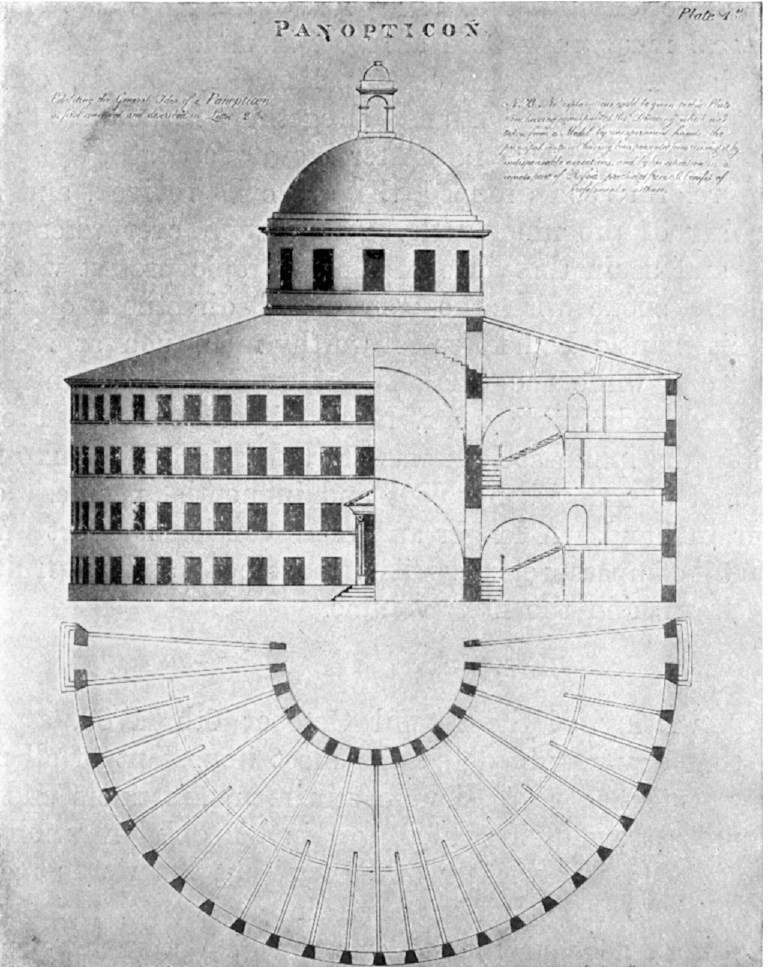
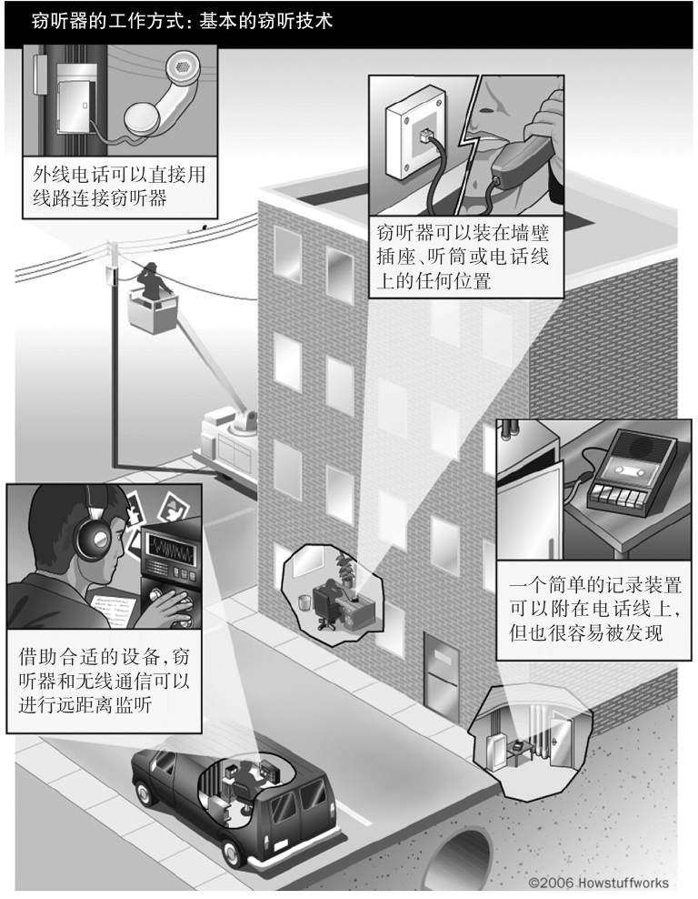
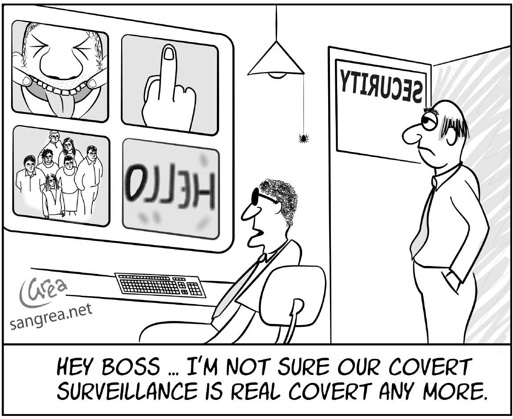
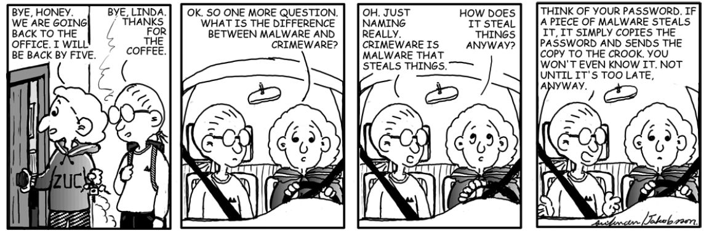
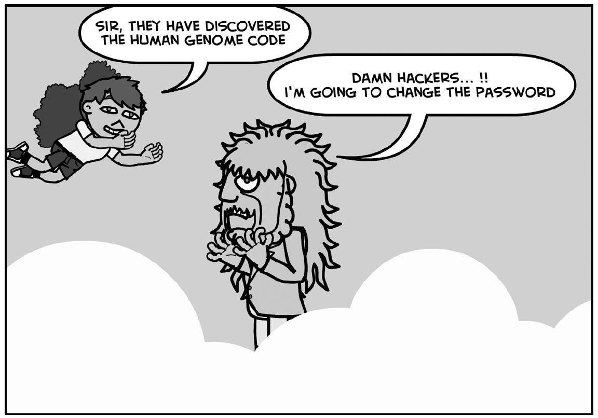
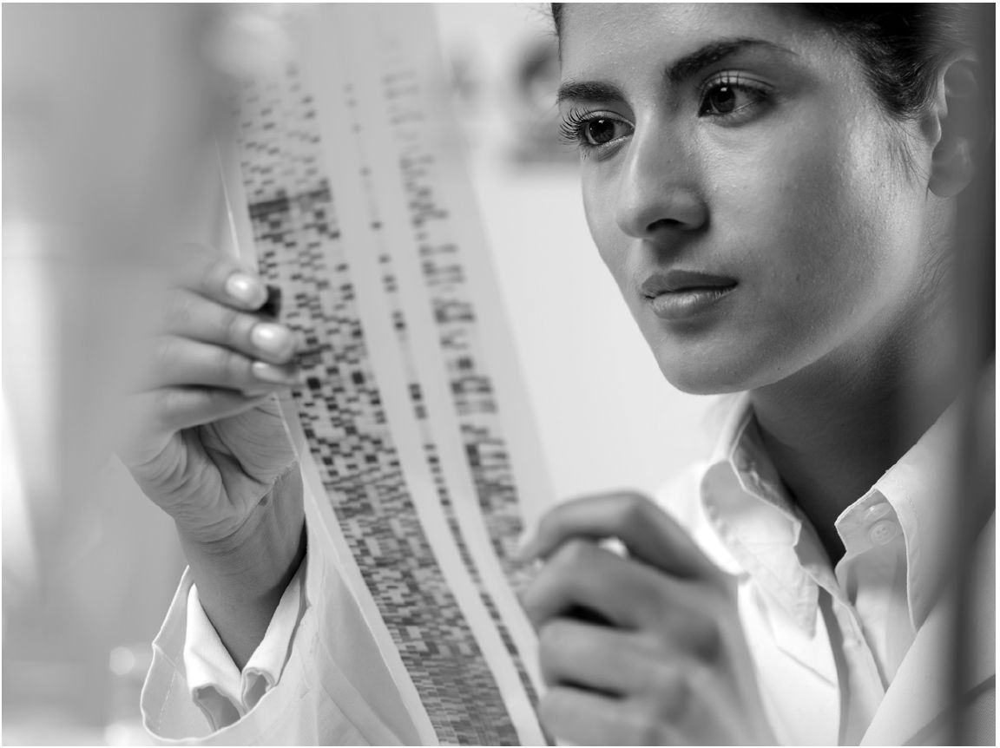
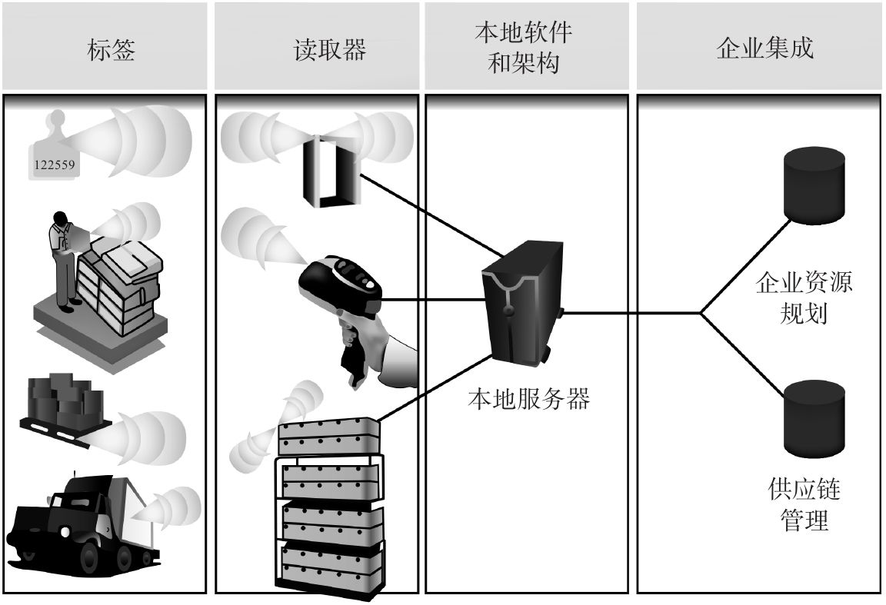

从前，乘客无须被搜身就可以登机。“hacking [1] ”形容咳嗽——可能是由病毒引起的；“cookies [2] ”是拿来吃的，而不是让人担惊受怕的。
有人监视着你。无所不在的“老大哥” [3] 不再让人震惊。无论公私部门，对交易数据的“低技术”收集都变得很普遍。除了闭路电视监控系统在公共场所的日常监视外，对移动电话、工作场所、车辆、电子通信和网络活动的监测也迅速在大多数先进社会普及。
从广义来说，隐私的含义超出了这些以个人信息为主要目标的侵犯，它将包括对私人领域的多重侵犯，特别是政府的侵犯，这体现为沃伦和布兰代斯 [4] 提出的短语——“独处的权利”。这个广义性的概念让人联想到爱德华·科克爵士17世纪的著名宣言，即“一个人的家就是他最坚固的城堡”，它包含各种侵权问题，不仅侵犯了“空间”和“地点”的隐私，而且还干扰了通常具有道德属性的“决策”问题，比如堕胎、节育和性偏好等。
就监控的情形而言，片刻的反思就会揭露出许多有讽刺意味的事，甚至诸多难题，其性质及我们对它的反应既不直接也不显明。“老大哥在看着你”是威胁？是陈述事实？还是仅仅欺骗性的恐吓？这有什么不同吗？例如，我得知自己被一台闭路电视摄像机监视，这是否侵犯了我的隐私呢？如果摄像机（现在广泛使用的）只是一个逼真地模仿闪光灯、探测镜头、恐吓性移动拍摄的仿制品，会怎么样？其实它什么都没有录下，但我不知道它没录下。我反对的理由是什么？又或者假设摄像机是真的，但由于出故障了而没有生成、存储或使用图像？我的行动没有被监控，但主观上我无法镇定。只要有一个装置出现，似乎在监控和记录我的行为，就无疑让我不安。
换句话说，我相信自己被监视使我感到不平。实际上，我是否是监视的对象，这并不重要。因此，我反对的理由并不是因为有人在监视我——因为我没被人监视，而是因为我感觉到自己被监视的这种可能性。
在这方面，被一个可见的闭路电视摄像机监控不同于其他避不开的秘密设备：电子监听装置。我的房间、办公室或者我的电话也许会被窃听，既然是窃听，顾名思义，我通常对自己的隐私被侵犯一无所知。当然，我不知情并不影响这种做法令人反感。然而，与仿制品或出故障的相机不同的是，这种秘密设备使我一直受到监视：我的私人会话被记录或截听，尽管我没有意识到，我的通信（电子邮件或普通邮件）被秘密拦截，也是如此。
在前一种情况下，没有任何个人信息被捕获；后一种情况则有，但我可能永远不会知道。这两种情况都属于“侵扰”范畴，但每一种都有不同的含义。事实上，越研究这个（被忽视的）问题，“侵扰”这个主题就变得越支离破碎。我们需要对每种行为进行单独的分析；它们都会引起一系列互不相关的令人担忧的情况，尽管这些情况都会因为人们的普遍担心而混在一起——人们担心自己的社会可能正在滑向或已经显示出奥威尔式社会严苛审查的恐怖特征。

图1 英国功利主义者杰里米·边沁设计了一个监狱，方便对囚犯进行秘密观察。“圆形监狱”这个词在贬义上用来比喻对个人信息的监控，尤指对网上信息的监控。
从根本上说，这是一个关于感觉及其后果的问题。虽然我确信闭路电视监控系统在监视我是基于明显的证据，而我对自己的通信或对话被截取不知情则显然是无证据支撑的，但这种不安是类似的。两种情况下，人们都厌恶地意识到需要调整自己的行为，因为他们推测自己的言行受到了监视。例如，在南非种族隔离最黑暗的镇压时期，反政府活动分子的电话经常被安全部门窃听。因此，人们要小心翼翼、战战兢兢地说话。这不可避免会让说话显得生硬、不自然。人们在公共场合或私人空间改变或调整自己的行为，是国家未能适当管理监视的结果，这种结果令人不安。例如，越来越多应用于工作场所的监控手段，不仅在改变这种环境的特点，而且也在改变我们所做工作的性质和我们做事的方式。我们知道自己的行为被监控，或者仅仅可能被监控，这损害了我们的心理和情感自主性：
如果要保持谈话的亲密、私密和非正式的特点，谈话必须未经剪辑。确实，电子监管的趋势可能会从根本上改变人们相互间的关系和身份认同。在这样的世界里，可以说雇员更不可能有效地行使其职责。如果这种情况发生，窥探的雇主得到的结果最终会与他希望得到的完全相反。
窃听
无论是固定电话还是移动电话，都很容易被窃听。对固定电话来说，线路只是一个长电路，由一对铜线组成，形成一个环路。通过许多交换站，电路将你的谈话从你家里传送到电话另一端的装置。在任何时候，窃听者都能将一个新的负载附加到电路板上，就像把一个额外的设备插入延长线上一样。用于电话窃听的负载是一种装置，可以将电路转换回你谈话的声音。这种原始的拦截方式的主要缺点是，窃听者需要知道窃听对象何时使用电话，他需要待在岗位上监听。一种不太方便的更复杂的方法是在线路上安装一个录音设备。就像电话应答机一样，它从电话线上接收电信号，并将其编码为磁带上的磁脉冲。这种方法的缺点是入侵者需要保持录音设备连续运行，以便监听任何谈话，但很少有磁带足够大，因此，声控录音机提供了一个更为实用的选择。尽管这样，磁带也不太可能持续足够长的时间来捕捉监听对象的对话。
答案显而易见：窃听器。窃听器接收音频信息并用无线电波传递信号。窃听器通常有小型麦克风，可以直接接收声波。电流被发送到无线电发射台，发射台传送的信号随电流变化。窃听者在附近设置一个无线电接收器，接收到这个信号并将其传输给扬声器或将其编码在磁带上。一个带有麦克风的窃听器尤其有价值，因为它可以听到房间里的任何谈话，不管窃听对象是否在通话。然而，传统的窃听器可以在没有话筒的情况下运行，因为电话有话筒。窃听者需要做的就是将电话线的任何一处连接到窃听器，因为它直接接收电流。通常情况下，窃听者会把窃听器连接到电话里面的电线上，这是传统的方法。这就免去了窃听者重返现场的必要，录音设备可能被藏在一辆面包车里，车子通常停在窃听对象的住所或办公室外。窃听移动电话需要拦截从听筒传送到听筒里的无线电信号，再将它们转换回声音。1990年代的模拟移动电话很容易被窃听，但当代数字手机的易受攻击性则要低得多。要读取这些信号，需要将数字电脑的比特转换成声音，这是一个相当复杂且昂贵的操作。不过，手机通话可能会在移动运营商的服务器上被拦截，或者在为无线通信携带加密语音数据的固定线路上被拦截。

图2 窃听电话是相当简单的操作
当你用手机给别人打电话时，你的声音会被数字化，并发送到最近的基站，再通过移动运营商的交换机将其传输到接收方附近的另一个基站。在基站之间，语音数据是通过固定线路传输的，固定电话的情况也是如此。看来，如果窃听者通过固定电话线路收听这样的电话，手机就和传统的电话没有什么不同，也一样易受攻击。
对隐私的预测
监控似乎令人生畏，未来它对我们的私生活的侵入可能更精密且骇人，包括生物识别技术，诸如卫星监测、穿透墙壁和衣物等以增强搜索精准度，以及“智能尘埃”装置——微小型无线微机电传感器（MEMS）更广泛应用，可以探测从光到振动的一切现象。这些所谓的“尘粒”小如一粒粒沙子，它们将收集数据，这些数据可以通过双向波段无线电在相距一千英尺远的尘粒之间发送。
随着网络空间成为一个日益危险的领域，我们每天都在得知网民所受到的新的、令人不安的攻击。2001年9月11日之前，人们就令人不安的新技术破坏人的自由表达了越来越多的担忧，这种担忧与全方位监控的趋势同时发生。我们听闻关于隐私脆弱性的报道至少已有一个世纪。但在过去十年里，这些报道呈现出更为紧迫的形式。这里存在着一个悖论。一方面，人们抨击计算机对人的操纵力在近年来的进展是对我们最后一点隐私的天罚；另一方面，互联网又被誉为乌托邦。当陈词滥调争论不休时，期望计算机操纵力的提升所体现的问题能够被合乎情理地解决是不明智的，但在这两种夸张的说法之间，可能存在着某些类似于真相的东西。至少就隐私的未来而言，几乎毫无疑问，这类问题正在我们眼前发生变化。如果说在笨重的原子空间，我们在保护个人免受监控蹂躏方面只取得了有限的成功，那么在我们这个华丽的新二元世界里，前景会好多少呢？
当我们的安全受到围攻时，我们的自由也不可避免地受到威胁。如果在一个世界里，我们的每一个动作都被监视，这就侵蚀了我们的自由，而这种自由正是人们窥探旨在保护的目的。自然，我们要确保用于加强安全的手段的社会成本不会超出其收益。因此，在停车场、购物中心、机场和其他公共场所安装闭路电视的后果并不令人惊讶：犯罪活动转移了，犯罪分子只是去了别的地方。而且，这种侵蚀除了向极权主义敞开大门之外，一个监控社会很容易导致人与人之间产生不信任和猜疑的气氛、减少对法律及其执行者的尊重，并强化对那些容易被发现和证实的罪行的检举控诉。
其他的新情况已经全面改变了法律环境的基本特点。法律受到了无数技术进步所带来的深刻影响和挑战。计算机欺诈、身份盗用和其他“网络犯罪”将在下文述及。
诸如克隆、干细胞研究和基因工程等生物技术的发展引起了棘手的伦理问题，也使传统的法律概念面临挑战。在一些法域，采用身份证和生物鉴别技术的建议遭到了强烈反对。DNA和闭路电视证据的使用改变了刑事审判的性质。
奥威尔式的监控在一些国家似乎已经存在且很活跃。例如，英国的公共场所有超过四百万台闭路电视摄像机：大约每十四名居民中就有一台。英国还拥有世界上最大的DNA数据库，大约有五百三十万个DNA样本。由公私部门安装闭路电视摄影机的诱惑是很难抗拒的。数据保护法（在第五章中讨论）表面上控制了闭路电视的使用，但这种条例并未被证明特别有效。丹麦采取了一种激进的解决办法，即禁止使用闭路电视，但有些地方例外，例如加油站。瑞典、法国和荷兰的法律比英国更为严格，这些国家实行许可证制度，法律要求在监测区外围设置警告标志。德国法律也有类似的要求。

图3 无处不在的闭路电视摄像机可能会降低其效能
生物识别技术
我们都是独一无二的。你的指纹是一种“生物识别”：生物信息的量度。长期以来，指纹一直被用作将个人与犯罪联系起来的一种手段，但指纹也提供了一种切实的隐私保护方法：与使用（并非总是安全的）密码登录计算机相比，越来越多的人使用指纹识别器，指纹识别成为更安全的入口点。我们可能会在超市收银台和自助取款机上看到更多的指纹识别器。
没有完美的生物识别，但理想是找到一种独特的个人属性，这种个人属性是不变的，或者至少不大可能随时间流逝而改变，利用对这一特征的度量作为识别所涉个人的一种手段。通常情况下，生物识别的一些样本由识别的对象提供，这些样本被数字化并存储在数据库中。然后，可利用生物识别技术，将主体的数据与其他个人的生物特征进行比对来识别主体，或确认某个单一主体的身份。
为了应对恐怖主义的威胁，未来无疑将更多地运用生物识别技术。这包括人体生理特征和DNA的一些测量方法。生物识别技术可基于以下特征：人的外貌（有静态图像支持），例如，护照中关于身高、体重、肤色、头发、眼睛的颜色、可见的身体标记、性别、种族、面部毛发、是否戴眼镜的描述；自然的生理特征，例如，颅骨测量、牙齿和骨骼受伤情况、拇指印、一组指纹；手印、虹膜和视网膜扫描、耳垂毛细血管模式、掌型；生物动力学，例如，手写签名的方式、统计分析的语音特征、按键动力学，特别是登录ID和密码；社会行为（由录像视频支持），例如，习惯的身体信号、一般语音特征、讲话风格、可见的残障；强加的物理特征，例如，狗牌、项圈、手镯和脚链、条码、嵌入式芯片、应答器等。
人们担心的是，在专制国家，生物识别技术可能会被强加给公众。生物识别技术供应商将通过向专制政府出售技术而蓬勃发展，并通过寻求“软柿子”在相对自由的国家站稳脚跟；他们可能从动物开始，或从诸如体弱者、穷人、老年人、囚犯、雇员等受控制的人群开始。一个不那么悲观的预测是，社会将认识到威胁的严重性，并对技术及其使用施加限制。这将需要公众的支持和民选代表的勇气，他们将需要顶住来自大公司和国家安全与执法当局的压力，这些机构援引恐怖主义、非法移民与国内“法律和秩序”来证成这一技术的实施。
生物识别技术的局限性
K.奥哈拉和N.夏伯特，《咖啡机里的监控》，Oneworld，2008年，第68-69页。
互联网
网上活动尤其容易受到攻击。恶意软件（或称“恶软”）的“炮兵部队”，包括病毒、蠕虫、木马、间谍软件、“网络钓鱼”、“机器人程序”、“僵尸”、漏洞和漏洞利用。
病毒是将自身的副本引入其他程序的代码块。它通常会携带一个有效负载，可能只具有滋扰价值，然而在许多情况下，其后果是严重的。为了躲避早期检测，除了执行复制功能，病毒可以延迟功能的执行。蠕虫会通过网络生成自己的副本，而不会感染其他程序。特洛伊木马是一个看似执行积极任务的程序（有时也是这样做的），但它通常是令人讨厌的，例如，它嵌入实用程序中的按键记录程序。
间谍软件是指通常隐藏在电子邮件附件中的软件，它秘密地收集设备中关于其用户或设备应用的数据。这些数据被传递给另一方，其中可能包括用户的浏览历史，记录个别按键（以获得密码），监视用户的行为以便进行消费者营销（所谓的“广告软件”），或观察受版权保护的作品的使用情况。网络钓鱼通常采取电子邮件的形式，这种电子邮件似乎是发自银行等可信任的机构。它试图诱使收件人泄露密码或信用卡详细信息等敏感数据。这些信息通常是非常不可信的，充满了拼写错误和其他明显的问题，然而这些明显的诡计成功欺骗了大量的接收者。

图4 网上冲浪危机四伏
有些恶意软件窃取个人数据或将你的电脑转换为由第三方远程控制的“机器人”，“机器人”可用来收集电子邮件地址、发送垃圾邮件或攻击公司网站。另一种形式的攻击是“拒绝服务”（DoS），它使用一大群“机器人”或“僵尸”向公司网站铺天盖地地发送虚假的数据请求。“僵尸”在互联网上创建了大量的处理器，这些处理器被置于中央或定时控制之下（因此称之为“僵尸”）。攻击将致力于使一个网站脱机。这可能持续数天，给受害公司带来相当大的损失。这些攻击行为通常伴随着对金钱的需求。
漏洞（Bugs）是软件中的错误，特别是微软的视窗操作系统，它可能会使用户的系统容易受到所谓“解密高手”（crackers）的攻击。微软通常会发出补丁供用户下载，直到下一个漏洞出现。“漏洞利用”是对特定漏洞的一种攻击。标准技术得到了在互联网上流传的既定准则和编程代码的支持。
据报道，2009年初，欧盟各国已鼓励警察在没有搜查令的情况下行驶侵入权，这种无证侵入的手段很少使用。这使得欧洲各地的警察在警官认为“远程搜查”对于预防或侦查严重犯罪（这种犯罪会被判处三年以上徒刑）是必要且适当的情况下，能够入侵私人电脑。这可以通过多种方式实现，包括将病毒附加到电子邮件消息中，只要打开该邮件，就会秘密激活远程搜索工具。
信息记录程序
信息记录程序是网站服务器传送到访问者的浏览器并存储在他或她的计算机上的数据。这些数据使网站能够将访问者的计算机识别为与之互动过的计算机，并记住以前交易的细节，包括搜索词，以及读取某些网页所花费的时间。换句话说，缓存技术默认允许网站偷偷地将自己的标识符永久地放到我的个人计算机上，以便跟踪我的网上行为。
信息记录程序是可持久的，它们可能会显示一个特定时期内访问过的每个网站的详细列表。而且，信息记录程序文件的文本可能会显示以前提供的个人数据。亚马逊等网站认为这种做法是合理的，声称通过向顾客提供基于其浏览行为可能忽视的书籍链接，来帮助顾客改善购物体验。但是，这也带来了一个明显的危险，那就是我的身份可能会因为过于关注上网冲浪过程中的一些不相关的部分而被曲解，或者，另一方面，从各种来源收集起来的个人数据可能会被组合起来，从而形成一个详尽的生活方式形象。

图5 似乎没有人不受黑客攻击的影响
黑客
黑客曾经被认为是无害的“网络窥探者”，他们坚持一种略带任性但讲道德的行为准则，要求人们不应该盗取数据，而只是报告受害者系统中的漏洞（见方框）。正如莱西希所说的那样，他们比保安更有侵略性，保安会检查办公室的门，以确保门锁上……而（黑客）不仅检查了门锁，还让自己进去了，快速地扫视了一下四周，留下了一张可爱的（或讽刺的）纸条，上面写着，“嘿，笨蛋，你把门开着”。
虽然这种悠闲的文化最终吸引了执法当局的兴趣——他们通过立法来反对这种文化，但现实仍然令人头疼。根据威瑞信公司的西蒙·丘奇的说法，犯罪分子用来销售用户信息的在线拍卖网站仅仅是个开始。他预计，将不同数据库组合在一起的“混搭”网站可能会被转换为犯罪用途。想象一下，如果一个黑客把他从一家旅行社的数据库中收集到的信息与谷歌地图结合起来，他可以为一个精通技术的盗贼提供行车指南，便可在你一去度假的时候就立马到达你空无一人的房子。
黑客的（可疑的）乐趣
埃里克·史蒂文·雷蒙德，《如何成为一名黑客》，http://www.catb.org/~esr/faqs/hacker-howto.html。
身份盗用
挪用一个人的个人信息并进行欺诈或冒充是一个日益严重的问题，每年造成数十亿美元的损失。2007年，美国联邦贸易委员会的一项调查发现，2005年共有3.7%的调查参与者表示他们曾是身份盗用的受害者。这一结果表明，当年大约有八百三十万名美国人遭受某种形式的身份盗用，所有受害者中有10%的人自掏腰包支付了一千二百美元或更多的损失。占比相同的受害者至少花了五十五个小时来解决他们的问题，其中用时排名前5%的受害者至少花费了一百三十个小时。在2006年的调查中，身份盗用造成的损失总额估计为一百五十六亿美元。
身份盗用通常至少涉及三个人：受害者、冒名顶替者和一个信贷机构。信贷机构以受害者的名义为冒名顶替者开立一个新账户，新账户可包括信用卡、公用事业服务，甚至是抵押贷款。
身份盗用有多种形式。最有害的行为可能包括信用卡欺诈（盗取一个账号，以便进行未经许可的收费）、新账户欺诈（冒名顶替者以受害者的名义开一个账户或“贸易热线”，可能直到受害人申请信贷之后才被发现）、身份克隆（冒名顶替者冒充受害者的身份）和盗用身份犯罪（冒名顶替者冒充受害者，致使受害者因某种罪行被捕，或因违法而被罚款）。
部分责任必须归咎于金融服务行业本身。他们在授信发放贷款和促进电子支付方面的保密措施不严格，从而导致安全让位于便利。
身份证
乍看之下，一张包含持有人关键个人信息的强制性身份证，似乎会是解决身份盗用、税务和福利欺诈、非法移民，当然还有恐怖主义等多重问题的灵丹妙药。然而，除了在遏制有害活动方面的实际效力外，强制性身份证不可避免地会引起强烈的敌意，特别是来自隐私权倡导者的敌意，尤其在英美法系国家，例如英国、澳大利亚、加拿大、美国、爱尔兰和新西兰，在这些国家引入强制性身份证的尝试迄今为止都未成功。在斯堪的纳维亚国家的阻力也很大。文化力量显然与要求个人携带“证件”的观念背道而驰。例如，在英国，人们对任何旨在证明自己存在的民主权利的强迫行为，都有根深蒂固的反对意见！
不过，大约有一百个国家确实存在各种形式的强制性身份证，在欧洲和亚洲，反对使用各种强制性身份证的人则少得多。包括法国、德国、西班牙、葡萄牙、比利时、希腊和卢森堡在内的十一个欧盟成员国都在使用强制性身份证。在亚洲，中国香港的经验具有启发意义。自1945年以来，香港一直主要（或至少表面上）使用身份证件来管制非法入境者的拥入。事实上绝大多数香港居民对任何时候都要随身携带身份证的规定和身份证上的个人资料都不太注意，这是毫无疑问的。的确，为购买戏票、预订餐厅，以及其他类似的目的而证实自己的身份，已成为一个非常便利的方法。
最近，香港特区政府把这张卡“升级”成了现在被称为“身份智能卡”的东西，卡里有一张芯片，里面包含持卡人的出生、国籍、住址、婚姻状况、职业的详情，以及配偶或子女的详细资料。法律要求对居民进行拍照和提取指纹，居民方可获得身份智能卡。特区政府声称，使用智能卡有许多好处，包括更高的安全性（刻在卡的不同层面上并保存在芯片中的数据可以防止遗失或被盗的身份证被他人篡改或使用）、便利性（具有多种应用功能，如电子证书和图书馆借书证功能，持卡人可一卡多用）、“优质服务”（持卡人可在网上享受各种各样的公共服务），以及更方便的旅行（通过旅客自动清关系统和车辆自动清关系统，芯片内储存的指纹模板可使出入境手续的办理更加方便快捷）。
为了减轻对滥用数据的担心，特区政府坚持认为，RFID芯片中只存储了最低限度的数据。更敏感的个人信息保存在后端计算机系统中。不同用途的数据是分开的，所有的非入境用途都是自愿的。数据的收集、储存、使用和公布都必须符合《个人资料（隐私）条例》等立法的规定。只有获授权的部门才可使用有关的数据库，各政府部门之间并无共用数据库。持卡人在其身份被认证后，可以通过智能身份证读卡器查看卡上的数据，这些读卡器安装在入境自助服务站。隐私影响评估（PIA）是在智能身份证项目的不同阶段进行的。香港立法机构已修订法例，以加强保护数据的隐私性。
这听起来让人放心，而且提高效率、公平性和便利性的吸引力也不容轻率地忽视。但是在英国提议使用身份证时，这些优点就必须与“功能蠕变”、错误、私密性和身份盗用等非常现实的前景相平衡。任何政府机构出于各种目的使用这些数据、在各部门之间共享信息，以及合并数据库的诱惑可能是不可抗拒的。即使是最先进的身份证，也无法阻止欺诈者或恐怖分子。
反对使用身份证的十二个论据
西蒙·戴维斯，《老大哥》，潘书出版社，1996年，第139-151页。
DNA数据库
DNA证据在犯罪侦查中的应用越来越多，这就产生了对样本数据库的需求，以确定某个人的情况是否与犯罪嫌疑人的情况相匹配。英格兰和威尔士的DNA数据库（有五百三十万人的数据信息，占总人口的9%）可能是世界上最大的。它包括近一百万从未被起诉或后来被宣告无罪的嫌疑人的DNA样本和指纹。无辜的人对保留他们的基因信息感到愤愤不平并不奇怪，但滥用的可能性也是存在的，这并不是一件小事。这种令人沮丧的前景导致有两个人要求在他们自由后将他们的数据信息删除，因为无法说服英国法院，于是他们向欧洲人权法院提起上诉。欧洲人权法院在2008年底一致裁定，他们的隐私权受到了侵犯。

图6 DNA数据的各种用途对个人隐私构成相当大的风险
你床上的监控
K.奥哈拉和N. 夏伯特，《咖啡机里的监控》，Oneworld，2008年，第9页。
当嫌疑人被判无罪时，其他法域倾向于销毁其DNA数据信息。例如，在挪威和德国，DNA样本只有经法院批准才可以永久保存。在瑞典，只有服刑两年以上的已定罪罪犯的档案可以保留。美国允许联邦调查局（FBI）在逮捕嫌疑人时提取其DNA样本，但如果没有提出指控或嫌疑人被无罪释放，这些样本可以根据要求被销毁。在拥有DNA数据库的大约四十个州中，只有加利福尼亚州允许永久性地保存被指控但之后又被消除嫌疑的个人的数据信息。
有人建议，为了避免针对某些群体（例如黑人男性）的歧视，应将所有人的DNA数据信息收集起来并保存在数据库中。这种极端的建议不大可能得到普遍支持。但显而易见的是，为了保持系统的完整性和保护隐私，这类敏感而脆弱的基因数据需要被严格的管制。
击退对隐私的侵犯
促进隐私保护技术（PETs）旨在通过删除或减少个人数据，或者在防止不必要或不想要地处理个人数据的同时不损害数据系统的运作，来保护隐私。最初这项技术采取的形式是“化名工具”：这种软件允许个人在操作电子系统时拒绝透露他们的真实身份，并且可以只在绝对必要时才予以透露。这些技术有助于减少收集到的关于个人的数据量。然而，它们的效果在很大程度上取决于那些有权撤销或废除化名保护的人的正直性。不幸的是，人们无法一直信任政府。
更强大的PETs没有采取化名方式，而是提供了更强的匿名性保护，使政府和企业无法将数据与已识别的个人联系起来。这通常是通过一系列中介运作服务实现的，每个中介都知道链条中紧邻的中介的身份，但都没有足够的信息来促进识别之前和之后的中介。它不能将通信追踪到发送方，也不能将其转发给最终的接收方。
这些PETs包括匿名回邮系统、网页浏览措施，以及戴维·乔姆的付款人匿名电子现金或电子钱币，它们采用一种盲法技术，向银行发送随机加密的数据，然后（通过使用某种数字货币）验证这些数据，并将数据返回到硬盘。只提供一个序列号，收件人不知道（也不需要知道）付款的来源，这个过程提供了更加强大的匿名性保护。在项目的电子版权管理系统（ECMS）方面，它具有相当大的潜力，比如欧洲委员会ESPIRIT [5] 方案正在开发的传输电子文件的版权（CITED）和COPICAT等项目。人们常常需要在未经版权所有者同意或支付版税的情况下，下载和销售受版权保护作品的全文，而这些项目寻求技术解决办法，根据这些办法，用户使用这些材料可能被起诉。这种对用户的“追踪”构成了对隐私明显的威胁：用户的阅读、聆听或观看习惯可能被储存起来，为了潜在的阴险或有害的目的获取这些习惯。盲签似乎是一种相对简单的隐去用户姓名的方法。
匿名是一种重要的民主价值观。即使在电子时代之前，匿名也有助于个人参与政治进程，否则人们可能会放弃参政。事实上，美国最高法院已经认定，《宪法第一修正案》保护匿名言论的权利。我想用化名来隐瞒自己的身份或以其他方式实现匿名的原因有很多。在互联网上，我可能想公开身份，但使用匿名邮件转发器进行对话（可以是已知身份，也可以是匿名身份）。我甚至希望没有人知道我的电子邮件收件人的身份，我也可能不想让任何人知道我属于哪个新闻组，或者我访问过哪些网站。
而且，对举报人、虐待行为的受害者和那些需要各种帮助的人而言，匿名都有明显的个人和政治益处。同样（一如既往？），这种自由也可能庇护犯罪活动，尽管匿名言论的权利并不会延伸到非法言论。匿名与隐私和言论自由有着独特的关系。互联网提供了大量的匿名机会，我们很可能只是在这两个领域里发现其潜力。这就提出了（有些令人不安的）关于我们是谁的问题，即我们的身份问题。
为保护通信安全而使用强大的加密技术，这种做法已经遇到了阻力（尤其是在美国和法国），有的人提议完全禁止加密，有的人提议通过诸如公钥托管等手段，保留拦截信息的权力。执法者和密码学家之间的斗争可能会旷日持久，特别是因为强大的加密文化被普通计算机用户所接受的方式，即使用“热情”一词来表达也过于温顺了，考虑到菲尔·齐默尔曼的加密软件“相当好的隐私”（PGP）可在不到五分钟内生成，并且还可以在互联网上免费获得。
现代密码学的一个核心特征是“公钥”。在电信安全方面采取了闭锁和密钥的办法。锁是一个公钥，用户可以将其传送给收件人。要解锁邮件，收件人需使用个人加密代码或“私钥”。公钥加密大大增加了加密/身份的可用性，因为双密钥系统允许将加密密钥提供给潜在的通信方，同时将解密密钥保密。例如，它允许银行向若干客户提供其公钥，但不允许他们读取彼此的加密信息。
技术解决办法尤其有助于掩盖个人身份。弱形式的数字身份已被广泛用于银行账户和社会保障号码的形式。它们只提供有限的保护，因为将它们与它们所代表的人相匹配是一件简单的事情。智能卡的出现将产生虚拟身份的转变，这将促进真正的交易匿名性。“盲法”或“盲签名”和“数字签名”将极大地增强对隐私的保护。数字签名是一种独特的“密钥”，它提供了比本人书面签名更强的认证。公钥系统包括两个密钥：一个是公钥，另一个是私钥。公钥系统的优点是，如果你能够解密信息，那么你就知道它只能由发送方创建。
最重要的问题是：我的身份是否真的 是有关行为或交易所要求 的？这就是第五章所讨论的数据保护原则的作用。
P3P
隐私政策管理系统的一个重大发展是，具备允许用户根据其个人隐私偏好对其浏览内容做出知情选择的技术。这些协议中最广为人知的是由万维网共同体（W3C）开发的隐私偏好平台（P3P）。它允许网站能够制作其隐私政策的机读版，从而使浏览器配备了P3P阅读器的用户在与网站的隐私政策相比较后，能够自动获得其特定的隐私偏好。这将清楚地说明该网站收集了什么信息，以及它将如何处理这些信息。如果网站的政策与用户的隐私偏好不一致，用户就会收到通知。
然而，作为主要的隐私权倡导组织之一，电子隐私信息中心（EPIC）却并不买账。该组织把P3P戏谑为“相当糟糕的隐私”（Pretty Poor Privacy），并抱怨说，P3P不符合隐私保护的基本标准：
该组织认为，良好的隐私标准要建立在公平的信息实践和真正的PETs的基础上才更为妥当，从而最大限度地减少或消除个人可识别信息的收集：

图7 RFID技术的使用不断升级，对隐私构成的威胁不胜枚举
RFID
RFID技术作为一种替代条码的库存控制手段应运而生。一个RFID系统由三部分组成：每个消费项目上的一个微型芯片（一个RFID标签），它存储了一个独特的产品标识符，一个RFID读取器，以及一个连接到读取器上的计算机系统，这个系统可以访问库存控制数据库。该数据库包含广泛的产品信息，包括产品的内容、来源和生产制造历史。给产品贴上标签也会披露产品的位置、价格和销售地点，而对于运输公司来说，还会披露其运输行程。RFID可以应用于召回缺陷商品或危险商品、追踪被盗的财产、防止假冒，并提供审计线索以阻止腐败。
RFID的潜力是巨大的，它正被越来越多地用于“非接触式”支付卡、护照以及对行李、图书馆书籍和宠物的监控。没有理由认为人类不能像我们的狗那样被植入微型芯片，它可以帮助识别走丢的老年痴呆症患者的身份。将RFID和无线保真网络（Wi-Fi）结合起来，可以促进对无线网络（如医院）中的物体或人进行实时跟踪。对隐私方面的担忧是，接受这些善良的应用可能会引起不那么善意的用途；可能会有人呼吁给性犯罪者、囚犯、非法入境者和其他“不受欢迎的人”贴上标签。
还有一种担心是，如果RFID数据可以与其他数据（例如，储存在信用卡或积分卡中的信息）汇集在一起——将产品数据与个人信息相匹配，这样就可以对消费者的个人情况进行全面的收集。此外，在公共场所、家庭和企业中增加使用RFID可能预示着监控社会的扩大。例如，我在车子挡风玻璃上贴了一个RFID，可以自动从我的银行账户中扣除通行费，我的车子刚刚通过比萨收费站的事实记录可能对于对我的行动感兴趣的一方有用。显然，精密的PETs是有必要的。
全球定位系统（GPS）
GPS用卫星信号来定位。目前，GPS芯片在车载导航系统和移动电话中已经很普遍。通过将GPS生成的数据纳入数据库并与其他信息汇集以创建地理信息系统（GIS），是有可能的。为了打电话或接电话，移动电话将其位置传送到基站。因此，实际上，它们每隔几分钟就发送一次用户的位置。
诸如无线信号的洛基三角定位服务，允许用户获得当地天气报告，找到附近的餐馆、电影院或商店，或者与朋友们共享他们的位置。根据该网站的介绍，“当你在旅行时，MyLoki可以通过你最喜欢的平台——Facebook、RSS Feeds、博客的徽章——甚至Twitter，自动让你的朋友知道你在哪里”。它声称不收集个人信息，以此来保护隐私。
遗传信息
探索我们基因结构的能力带来了许多隐私问题，尤其是医生有义务保护患者的私密性，而《希波克拉底誓言》中所规定的保护患者隐私的义务在多大程度上充分保护了这一敏感信息不被泄露。这也引起了一个棘手的问题，即患者的血亲，甚至伴侣和配偶对了解这些资料的兴趣远非小事。
不能低估这些和其他对隐私的侵入所带来的挑战。我们是如何来到这种局面的？下一章试图提供一种答案。